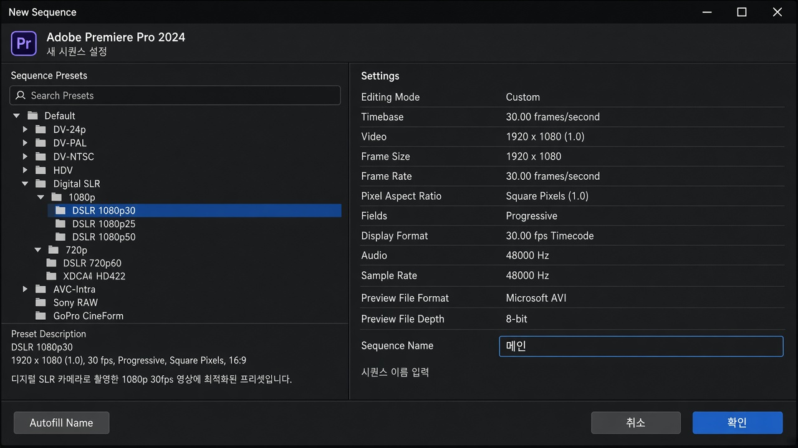
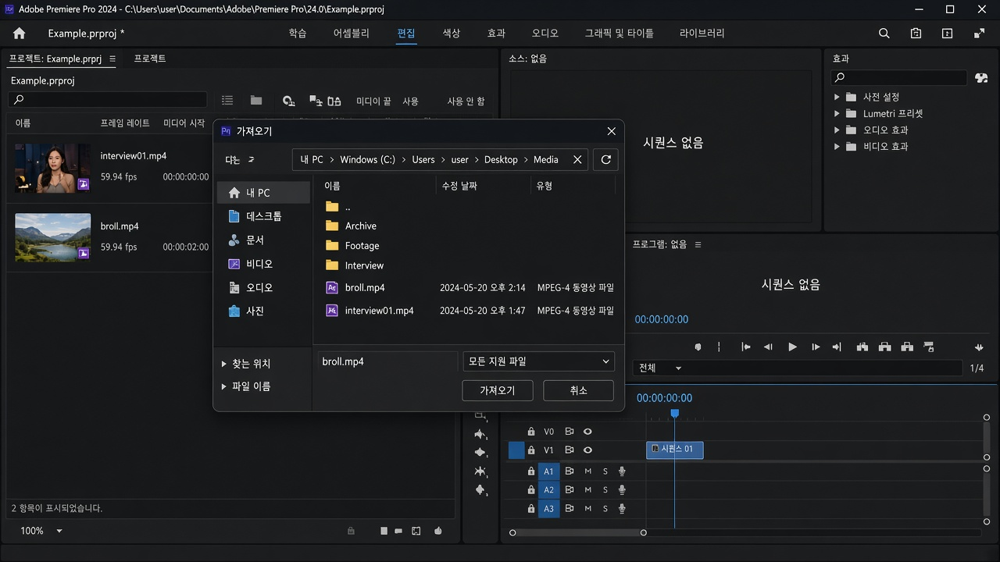
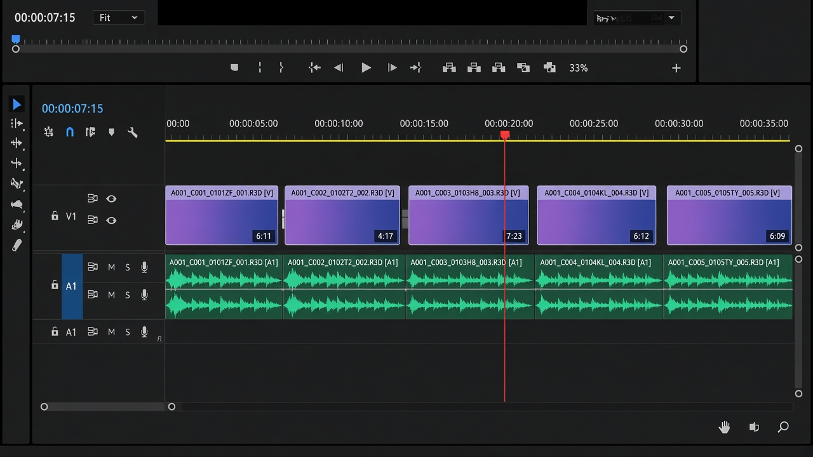

레슨 02
프로젝트와 시퀀스
영상을 담을 타임라인을 만들고, 원본 파일을 프로젝트로 가져옵니다.
목표. 시퀀스 하나를 만들고, 원본 폴더의 클립이 프로젝트 패널에 보이게 합니다.
프로젝트와 시퀀스의 차이
프로젝트는 작업 전체입니다. 파일 이름 끝은 .prproj입니다. 시퀀스는 그 안의 타임라인입니다. 하나의 프로젝트에 시퀀스를 여러 개 둘 수 있습니다. 컷편집은 시퀀스 위에서 이뤄집니다.
시퀀스 만들기
- 파일 → 새로 만들기 → 시퀀스를 엽니다. 단축키는 Ctrl+N입니다.
- 잘 모르겠으면 프리셋에서 Digital SLR → 1080p → DSLR 1080p30처럼 촬영 설정에 가까운 항목을 고릅니다.
- 유튜브·일반 폰 영상은 보통 1920×1080, 30fps 또는 60fps입니다. 24fps는 영화 느낌입니다.
- 시퀀스 이름을 메인처럼 알아보기 쉽게 바꿉니다.

클립을 프로젝트 패널에서 타임라인 아래로 끌어다 놓으면, 그 클립 설정에 맞춰 시퀀스를 만들어 주겠냐고 묻습니다. 입문 단계에서는 이 방법이 가장 실수가 적습니다.
미디어 가져오기
- 원본은 이미 01_원본에 복사해 둡니다. 카메라에서 바로 편집하지 마세요.
- 파일 → 가져오기 또는 프로젝트 패널 빈 곳을 더블클릭합니다. 단축키 Ctrl+I.
- 영상·오디오 파일을 선택합니다. 폴더째 가져와 정리해도 됩니다.
- 프로젝트 패널에 클립 이름이 보이면 가져오기가 된 것입니다. 타임라인에 아직 없어도 됩니다.

프리미어는 원본을 “가리키는” 방식입니다. 원본 폴더를 옮기거나 이름을 바꾸면 오프라인(연결 끊김)이 됩니다. 작업 중에는 폴더 위치를 바꾸지 마세요.
클립을 타임라인에 올리기
프로젝트 패널의 클립을 타임라인(보통 아래쪽)으로 드래그합니다. 비디오는 V1, 오디오는 A1에 같이 붙는 경우가 많습니다. 여러 클립은 촬영 순서대로 늘어놓으면 컷이 수월합니다.
